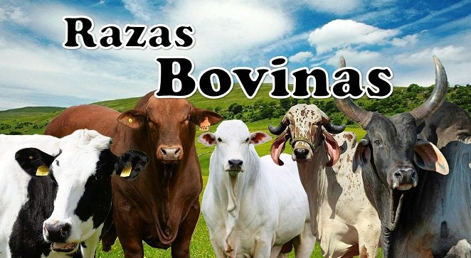
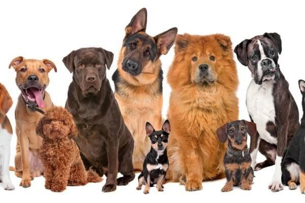
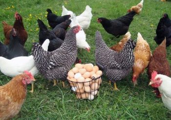
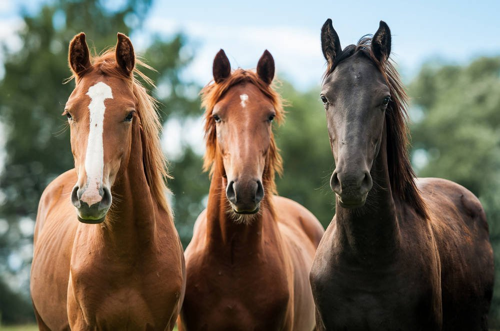
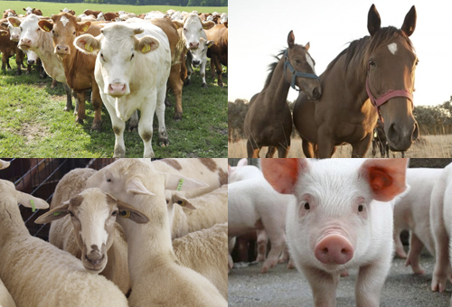
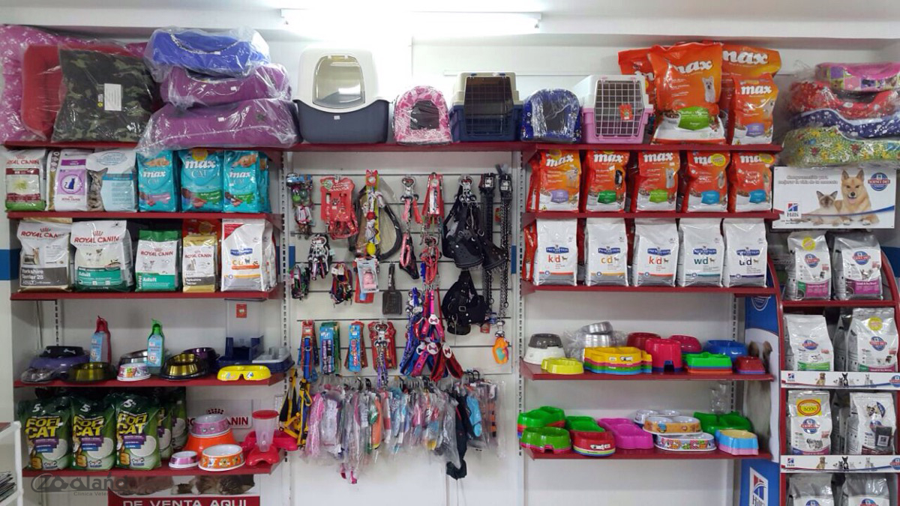
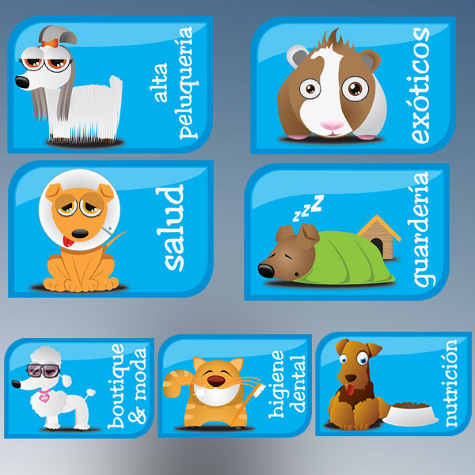
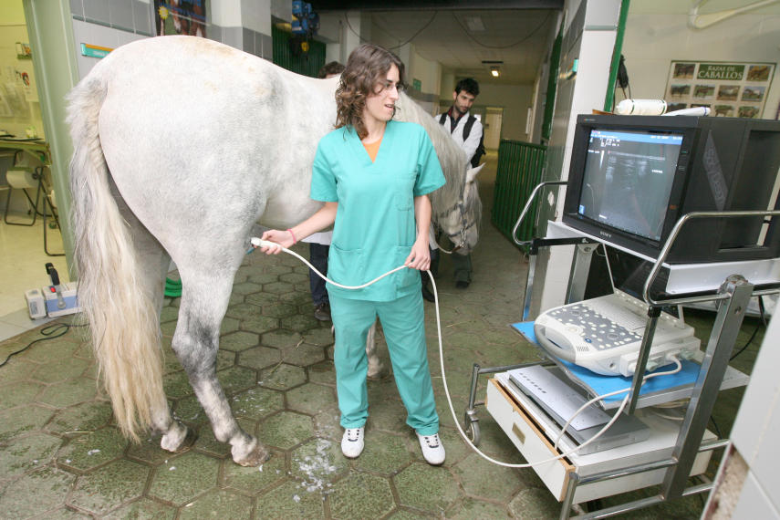

Razas bovinas

La vaca, en el caso de la hembra; o toro, en el caso del macho (Bos primigenius taurus), es un mamífero artiodáctilo de la familia de los bóvidos. El nombre científico es el que se le asignó al animal vacuno doméstico europeo y norasiático, un conjunto de bóvidos domésticos descendientes de la subespecie de uro salvaje euroasiático conocida como Bos primigenius primigenius; mientras que se denomina Bos primigenius indicus a los cebúes y otras razas bovinas domésticas provenientes del mismo tronco, y descendientes de la subespecie de uro salvaje del Sudeste Asiático, denominado Bos primigenius namadicus. Se trata de un mamífero rumiante grande y de cuerpo robusto, con unos 120-150 cm de altura y 600-800 kg de peso medio.
Perros


hoy en día se conocen alrededor de 800 razas distintas con tamaños y fisonomías muy diferentes y originadas a partir de la selección artificial por parte de los seres humanos. A pesar de que no cuentan con un gran sentido de la vista, tienen muy buen oído y el sentido del olfato muy desarrollado, siendo esta la herramienta que define sus mejores cualidades como cazador o rastreador, pero también su capacidad de socialización reconociendo olores familiares. Las hembras pasan el celo dos veces al año, su periodo de gestación dura un poco más de dos meses y suelen tener camadas de entre 8 y 12 crías. A pesar de que su esperanza de vida está entre los 12 y los 15 años, hay algunos que pueden alcanzar los 20 años.
gallinas

se denomina gallina a una ave que forma parte del orden de las especies galliformes, caracterizadas por su pico corto y algo curvado, sus alas tambien cortas y sus patas robustas. Las gallinas, cuyas plumas son lustrosas, tienen una cresta carnosa de color rojizo. existen muchas razas de gallinas, que suelen vivir entre cinco y diez años. son animales omnivoros que cacarean, emitiendo un sonido similar a cló-cló. en el caso de los gallos (machos), tambien cantan ("quiquiriqui"). por otra parte, la gallina tiene la capacidad de vuelo limitada, aunque está en condiciones de desplazarse hacia sitiosalgo elevados cuando está en peligro.
Caballos


Los caballos son animales mamíferos perisodáctilos –en cuyas extremidades poseen dedos terminados en pezuñas– que pertenecen a la familia de los équidos. Son herbívoros y el periodo de gestación de las hembras es de unos 11 meses, después del cual nace tan solo una cría. Existe únicamente una especie de caballo doméstico, sin embargo podremos encontrar alrededor de 400 razas diferentes que se especializan en todo tipo de tareas, desde fuertes y resistentes animales usados para tirar de los aperos del campo hasta los más veloces empleados en las carreras.
productos

contamos con todo tipo de variedad vacunas,antibioticos, antiparasitarios, unguentos, alimento para ganado para las mascotas perros, gatos, pollos, avez etc. contamos con articulos para animales canes ,equinos, monturas, botas, sombreros, alambre, malla, grapas, picos, pala,mecate, etc.
servicios


les brindamos los suientes servicios palpación, tratamiento de animales enfermos y control de trastornos que limitan la producción, cirugia, ultrasonofrafia, laboratorio clinico, emergencias, todo lo necesario consultas medicas, control de vacunación etc.